אוסף של נחשים לא-מוכרים ולא ארסיים שתועדו בישראל.
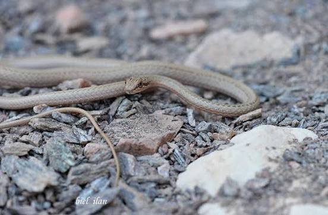
לא ארסינחש ארוך ודק, בעל ארבעה קווים כהים לאורך הגוף.
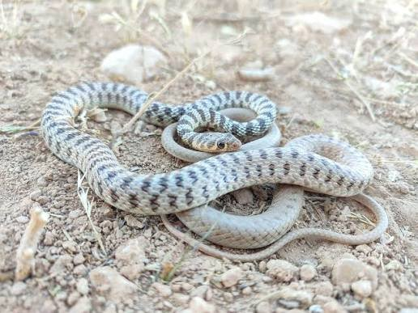
לא ארסיזעמן דק וזריז, לא ארסי, ממשפחת הזעמניים.
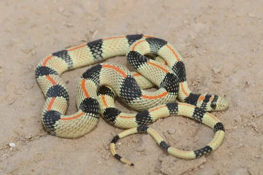
לא ארסינחש לא ארסי ונדיר יחסית בישראל.
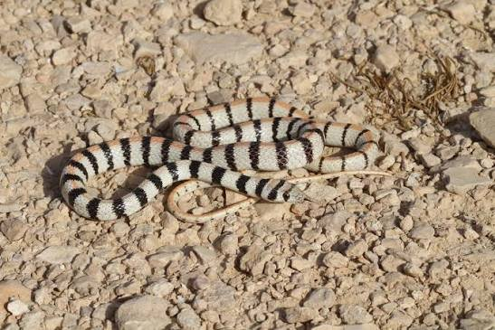
לא ארסינחש קטן, דק וזריז, בעל דגם של טבעות ופסים כהים.
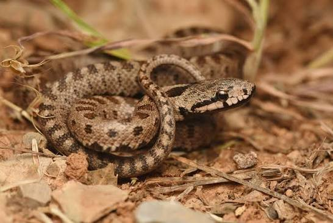
לא ארסיבישראל מדובר באוכלוסייה המצויה בעיקר באזור החרמון.
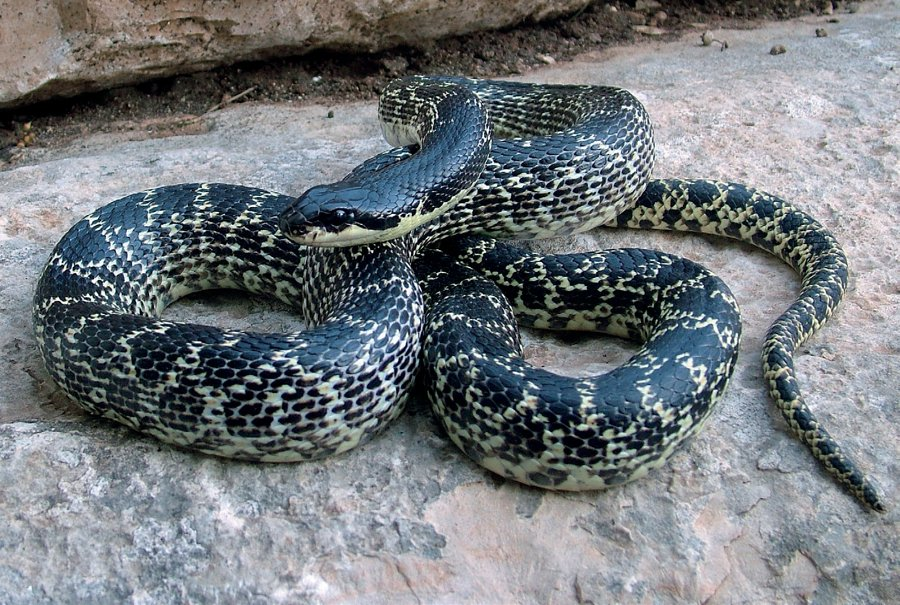
לא ארסימהנחשים הגדולים באזור; בעבר סווגה אוכלוסיית ישראל תחת Elaphe quatuorlineata ו־E. sauromates.
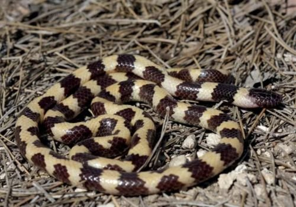
לא ארסינחש קטן בעל פסים שחורים וצהובים עד לבנים.
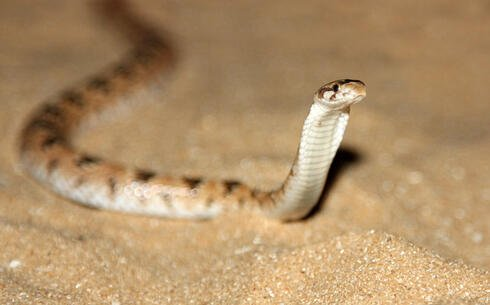
לא ארסינחש קטן המותאם היטב לחיים בחול ולחפירה בקרקע רכה.
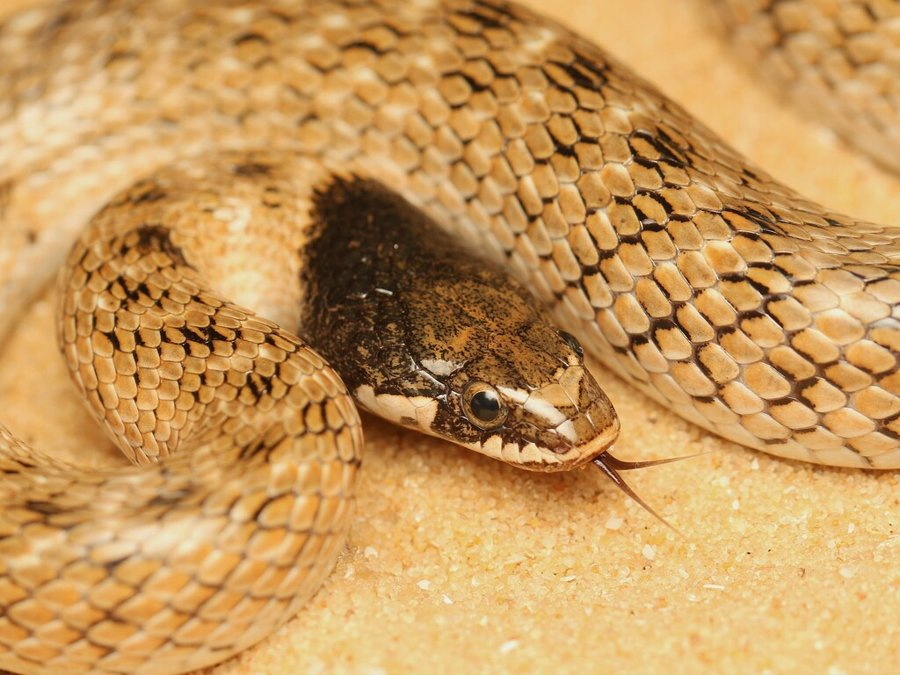
לא ארסישמו נובע מהכתם הכהה שעל ראשו, המזכיר כיפה.
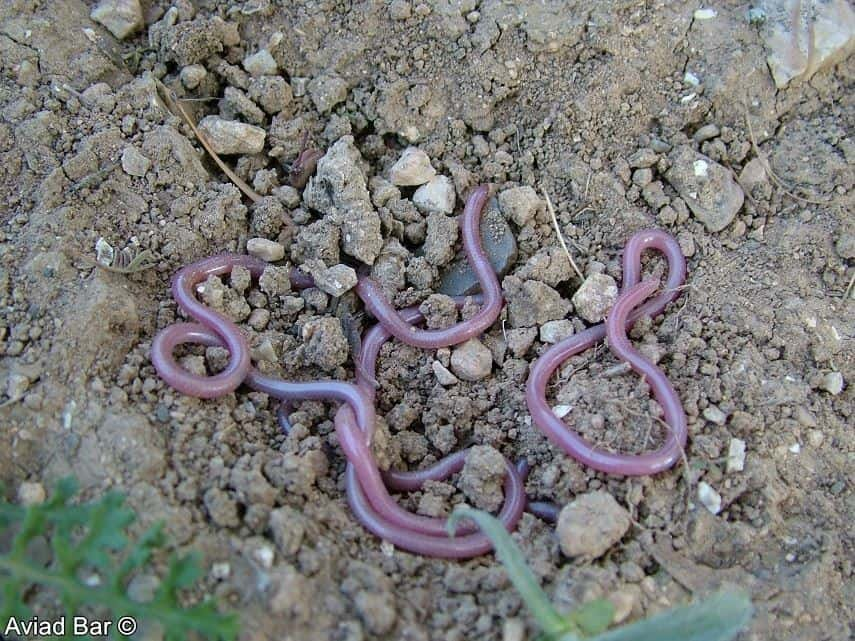
לא ארסיזהו נחש זעיר, דק מאוד וחי ברוב זמנו מתחת לפני הקרקע.
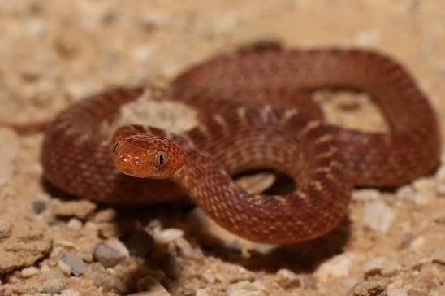
לא ארסינחש תת־ארסי הפעיל בעיקר בשעות הלילה.
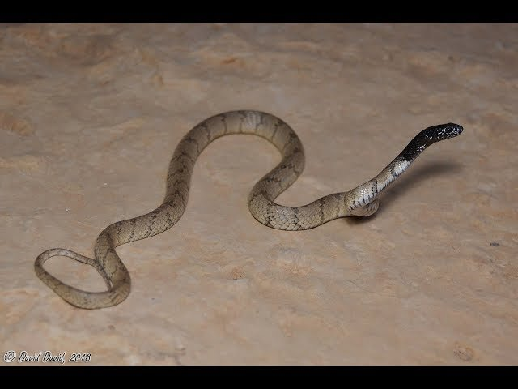
לא ארסינחש תת־ארסי ונדיר יחסית, בעל צבע אפור וראש כהה.
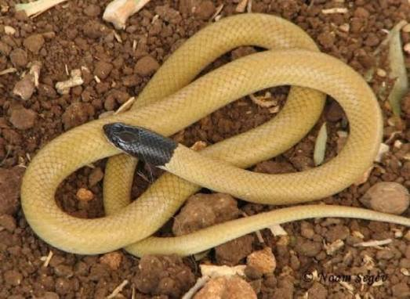
לא ארסינחש קטן ולא ארסי, שקל לזהותו בזכות ראשו השחור.
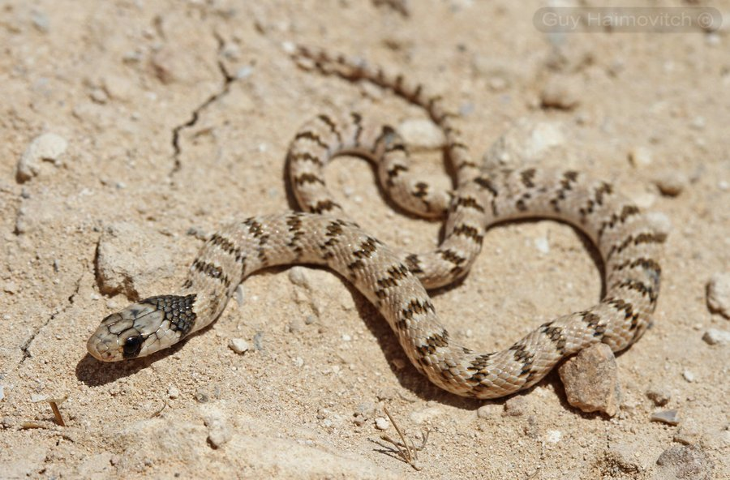
לא ארסינחש קטן ועדין, בעל פסי רוחב כהים לאורך הגוף.
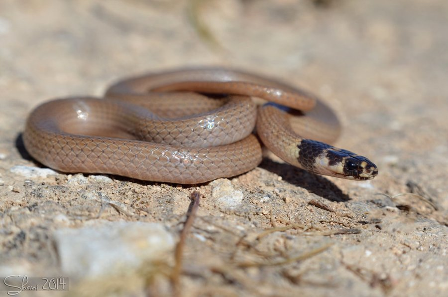
לא ארסיזהו נחש קטן ולא ארסי, בעל ראש כהה ודגם צבעוני בולט.
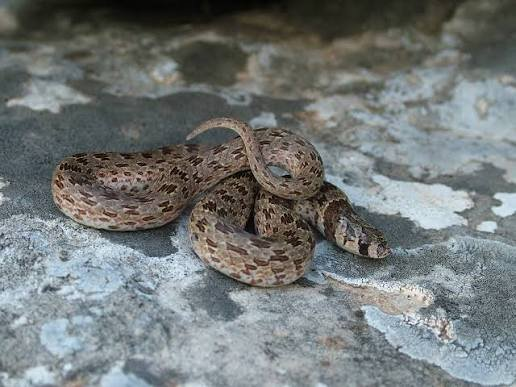
לא ארסינחש קטן, בדרך כלל חום או אפור בהיר, עם כתמים כהים על הגב.
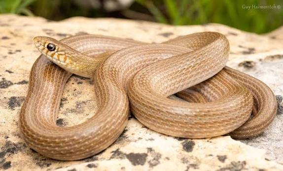
לא ארסינחש קטן ולא ארסי, בעל גוף חום־צהבהב וקווים כהים לאורך הגוף.
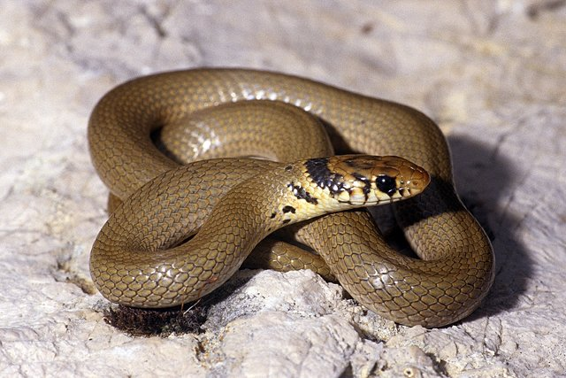
לא ארסיבישראל הוא מזוהה בעיקר עם אזור החרמון וצפון הארץ.
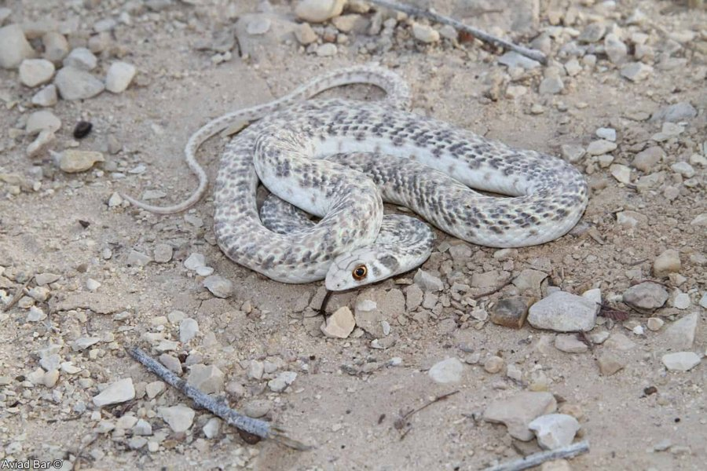
לא ארסיכאשר הוא מרגיש מאוים, הוא מרחיב את אזור הצוואר ומחקה במידה מסוימת התנהגות של קוברה.
הערה לגבי הדיוק המדעי: מינים אלה אינם ארסיים ואינם מסוכנים לאדם, וחלקם בעלי ארס אחורי חלש מאוד.